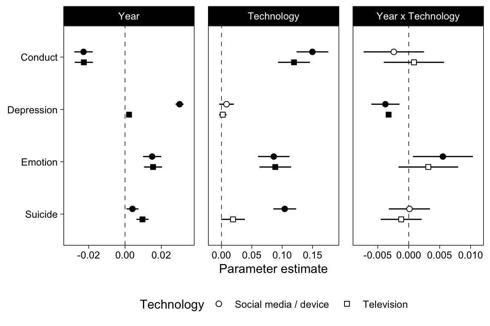

Chapter 6 Generalized Linear Model
This is a first pass. We model the means of the items of each dataset with OLS regression.
6.1 Data
mtf <- read_rds("data/mtf.rds")
us <- read_rds("data/us.rds")
yrbs <- read_rds("data/yrbs.rds")For US, we also isolate between- and within-person variables.
us <- bmlm::isolate(us, "pidp", "TV", which = "both", z = TRUE)
us <- bmlm::isolate(us, "pidp", "SM", which = "both", z = TRUE)
us <- us %>% select(-TV, -SM)
# We focus on between-person relations so rename those back
us <- us %>% rename(TV = TV_cb, SM = SM_cb)6.2 Yearly correlations figure
fit_year <- function(data, x, y, name) {
data <- data[,c("Year", x, y, "Sex")]
names(data) <- c("Year", "x", "y", "Sex")
data %>%
drop_na(x, y) %>%
group_by(Year) %>%
mutate(
x = as.numeric(scale(x)),
y = as.numeric(scale(y))
) %>%
group_modify(~broom::tidy(lm(y ~ x*Sex, data = .), conf.int = TRUE)) %>%
filter(term=="x") %>%
mutate(Technology = x, Outcome = y, data = name)
}
x1 <- fit_year(mtf, "TV", "Depression", "MTF")
x2 <- fit_year(mtf, "SM", "Depression", "MTF")
x3 <- fit_year(yrbs, "TV", "Suicide", "YRBS")
x4 <- fit_year(yrbs, "DV", "Suicide", "YRBS")
x5 <- fit_year(us, "TV", "Emotion", "US")
x6 <- fit_year(us, "TV", "Conduct", "US")
x7 <- fit_year(us, "SM", "Emotion", "US")
x8 <- fit_year(us, "SM", "Conduct", "US")
fits_year <- bind_rows(x1,x2,x3,x4,x5,x6,x7,x8)
# Rename device and social media to a similar construct
fits_year <- fits_year %>%
mutate(
Technology = ifelse(
Technology %in% c("SM", "DV"),
"Social media / digital device",
"Television"
)
)
fits_year %>%
ggplot(
aes(Year, estimate, shape = Outcome)
) +
geom_hline(yintercept = 0, lty = 2, size = .25) +
scale_shape_manual(values = c(15, 16, 21, 22)) +
scale_x_continuous(
"Year",
breaks = scales::pretty_breaks()
) +
scale_y_continuous(
"Estimate (±95%CI)",
breaks = scales::pretty_breaks()
) +
geom_line(
position = position_dodge(.33),
size = .25,
) +
geom_linerange(
position = position_dodge(.33),
show.legend = FALSE,
aes(ymin = conf.high, ymax = conf.low)
) +
geom_point(
position = position_dodge(.33),
fill = "white", stroke = 0.75
) +
facet_wrap("Technology", scales = "fixed", ncol = 1) +
theme(
legend.position = "right",
legend.background = element_rect(fill = NA),
legend.key = element_rect(fill = NA),
legend.text = element_text(size = 8),
legend.box.spacing = unit(0, "cm")
)
6.3 Models
fit <- function(data, name, x, y) {
data <- drop_na(data, all_of(x), all_of(y))
# Standardize X and Y
data <- mutate(data, across(c(all_of(x), all_of(y)), ~as.numeric(scale(.))))
data <- mutate(data, Year = Year - 2017)
ml1 <- lm(
str_glue("{y} ~ Sex * Year * {x}"),
data = data
)
tibble(
data = name,
Technology = x,
Outcome = y,
ml1 = list(ml1)
)
}
x1 <- fit(yrbs, "YRBS", "TV", "Suicide")
x2 <- fit(yrbs, "YRBS", "DV", "Suicide")
x3 <- fit(mtf, "MTF", "TV", "Depression")
x4 <- fit(mtf, "MTF", "SM", "Depression")
x5 <- fit(us, "US", "SM", "Emotion")
x6 <- fit(us, "US", "SM", "Conduct")
x7 <- fit(us, "US", "TV", "Emotion")
x8 <- fit(us, "US", "TV", "Conduct")fits <- bind_rows(x1,x2,x3,x4,x5,x6,x7,x8)
# Labels for plots
fits <- fits %>%
mutate(
Technology = ifelse(
Technology %in% c("SM", "DV"),
"Social media / device",
"Television"
)
)6.4 Results
fits %>%
mutate(Outcome = fct_rev(Outcome)) %>%
mutate(linear = map(ml1, ~tidy(., conf.int=TRUE))) %>%
unnest(linear) %>%
mutate(Parameter = case_when(
term == "Year" ~ "Year",
term %in% c("TV", "SM", "DV") ~ "Technology",
term %in% c("Year:TV", "Year:SM", "Year:DV") ~ "Year x Technology"
)) %>%
drop_na(Parameter) %>%
mutate(
Parameter = factor(Parameter, levels = c("Year", "Technology", "Year x Technology"))
) %>%
ggplot(aes(estimate, Outcome, shape = Technology, fill = p.value < .05)) +
scale_shape_manual(values = c(21, 22)) +
scale_fill_manual(values = c("white", "black"), guide = FALSE) +
scale_x_continuous(
"Parameter estimate",
breaks = scales::pretty_breaks(),
expand = expansion(.1)
) +
geom_vline(xintercept = 0, lty = 2, size = .25) +
geom_linerangeh(
position = position_dodge2v(.4),
aes(xmin = conf.low, xmax = conf.high)
) +
geom_point(
size = 2, position = position_dodge2v(.4),
) +
facet_wrap("Parameter", scales = "free_x") +
theme(
legend.position = "bottom",
axis.title.y = element_blank(),
panel.spacing.x = unit(12, "pt")
)
YRBS with separate logistic regressions for each outcome
tmp <- yrbs %>% pivot_longer(sad_lonely:suicide_3)
tmp_tv <- tmp %>%
group_by(name) %>%
mutate(TV = as.numeric(scale(TV)), Year = Year-2017) %>%
group_modify(~tidy(glm(value ~ Year*TV, family = binomial, data = .), conf.int = TRUE)) %>%
filter(term != "(Intercept)")
tmp_dv <- tmp %>%
group_by(name) %>%
mutate(DV = as.numeric(scale(DV)), Year = Year-2017) %>%
group_modify(~tidy(glm(value ~ Year*DV, family = binomial, data = .), conf.int = TRUE)) %>%
filter(term != "(Intercept)")
bind_rows(tmp_dv, tmp_tv, .id = "Technology") %>%
mutate(Technology = factor(Technology, labels = c("DV", "TV"))) %>%
mutate(Parameter = case_when(
term == "Year" ~ "Year",
term %in% c("TV", "DV") ~ "Technology",
term %in% c("Year:TV", "Year:DV") ~ "Year x Technology"
)) %>%
drop_na(Parameter) %>%
mutate(
Parameter = factor(Parameter, levels = c("Year", "Technology", "Year x Technology"))
) %>%
ggplot(aes(estimate, name, fill = p.value < .05, shape = Technology)) +
scale_fill_manual(values = c("white", "black"), guide = FALSE) +
scale_shape_manual(values = c(21, 22)) +
scale_x_continuous(
"Parameter estimate",
breaks = scales::pretty_breaks(),
expand = expansion(.1)
) +
geom_vline(xintercept = 0, lty = 2, size = .25) +
geom_linerangeh(
position = position_dodge2v(.4),
aes(xmin = conf.low, xmax = conf.high)
) +
geom_point(
size = 2, position = position_dodge2v(.4),
) +
facet_wrap("Parameter", scales = "free_x") +
theme(
legend.position = "bottom",
axis.title.y = element_blank(),
panel.spacing.x = unit(12, "pt")
)
options(width = 120)
library(sessioninfo)
session_info()## â Session info âââââââââââââââââââââââââââââââââââââââââââââââââââââââââââââââââââââââââââââââââââââââââââââââââââââââ
## setting value
## version R version 4.0.3 (2020-10-10)
## os macOS Big Sur 10.16
## system x86_64, darwin17.0
## ui X11
## language (EN)
## collate en_GB.UTF-8
## ctype en_GB.UTF-8
## tz Europe/London
## date 2021-03-01
##
## â Packages âââââââââââââââââââââââââââââââââââââââââââââââââââââââââââââââââââââââââââââââââââââââââââââââââââââââââââ
## package * version date lib source
## assertthat 0.2.1 2019-03-21 [1] CRAN (R 4.0.0)
## backports 1.2.1 2020-12-09 [1] CRAN (R 4.0.2)
## bmlm 1.3.11 2019-02-21 [1] CRAN (R 4.0.0)
## bookdown 0.21.6 2021-03-01 [1] Github (rstudio/bookdown@ca0145f)
## broom * 0.7.5.9000 2021-03-01 [1] Github (tidymodels/broom@0b3528b)
## bslib 0.2.4 2021-01-25 [1] CRAN (R 4.0.3)
## callr 3.5.1 2020-10-13 [1] CRAN (R 4.0.2)
## cellranger 1.1.0 2016-07-27 [1] CRAN (R 4.0.0)
## cli 2.3.1 2021-02-23 [1] CRAN (R 4.0.3)
## coda 0.19-4 2020-09-30 [1] CRAN (R 4.0.2)
## codetools 0.2-18 2020-11-04 [1] CRAN (R 4.0.2)
## colorspace 2.0-0 2020-11-11 [1] CRAN (R 4.0.2)
## crayon 1.4.1 2021-02-08 [1] CRAN (R 4.0.3)
## curl 4.3 2019-12-02 [1] CRAN (R 4.0.0)
## DBI 1.1.1 2021-01-15 [1] CRAN (R 4.0.2)
## dbplyr 2.1.0 2021-02-03 [1] CRAN (R 4.0.2)
## digest 0.6.27 2020-10-24 [1] CRAN (R 4.0.2)
## dplyr * 1.0.4 2021-02-02 [1] CRAN (R 4.0.2)
## ellipsis 0.3.1 2020-05-15 [1] CRAN (R 4.0.0)
## emmeans * 1.5.4 2021-02-03 [1] CRAN (R 4.0.2)
## estimability 1.3 2018-02-11 [1] CRAN (R 4.0.0)
## evaluate 0.14 2019-05-28 [1] CRAN (R 4.0.0)
## fansi 0.4.2 2021-01-15 [1] CRAN (R 4.0.2)
## farver 2.0.3 2020-01-16 [1] CRAN (R 4.0.0)
## forcats * 0.5.1 2021-01-27 [1] CRAN (R 4.0.2)
## fs 1.5.0 2020-07-31 [1] CRAN (R 4.0.2)
## generics 0.1.0 2020-10-31 [1] CRAN (R 4.0.2)
## ggplot2 * 3.3.3 2020-12-30 [1] CRAN (R 4.0.2)
## ggstance * 0.3.5 2020-12-17 [1] CRAN (R 4.0.2)
## glue 1.4.2 2020-08-27 [1] CRAN (R 4.0.2)
## gridExtra 2.3 2017-09-09 [1] CRAN (R 4.0.0)
## gtable 0.3.0 2019-03-25 [1] CRAN (R 4.0.0)
## haven 2.3.1 2020-06-01 [1] CRAN (R 4.0.0)
## highr 0.8 2019-03-20 [1] CRAN (R 4.0.0)
## hms 1.0.0 2021-01-13 [1] CRAN (R 4.0.2)
## htmltools 0.5.1.1 2021-01-22 [1] CRAN (R 4.0.2)
## httr 1.4.2 2020-07-20 [1] CRAN (R 4.0.2)
## inline 0.3.17 2020-12-01 [1] CRAN (R 4.0.2)
## jquerylib 0.1.3 2020-12-17 [1] CRAN (R 4.0.2)
## jsonlite 1.7.2 2020-12-09 [1] CRAN (R 4.0.2)
## knitr * 1.31 2021-01-27 [1] CRAN (R 4.0.2)
## lattice 0.20-41 2020-04-02 [1] CRAN (R 4.0.3)
## lifecycle 1.0.0 2021-02-15 [1] CRAN (R 4.0.2)
## loo 2.4.1 2020-12-09 [1] CRAN (R 4.0.2)
## lubridate 1.7.9.2 2020-11-13 [1] CRAN (R 4.0.2)
## magrittr 2.0.1 2020-11-17 [1] CRAN (R 4.0.2)
## MASS * 7.3-53.1 2021-02-12 [1] CRAN (R 4.0.2)
## Matrix 1.3-2 2021-01-06 [1] CRAN (R 4.0.2)
## matrixStats 0.58.0 2021-01-29 [1] CRAN (R 4.0.2)
## modelr 0.1.8 2020-05-19 [1] CRAN (R 4.0.0)
## multcomp * 1.4-16 2021-02-08 [1] CRAN (R 4.0.2)
## munsell 0.5.0 2018-06-12 [1] CRAN (R 4.0.0)
## mvtnorm * 1.1-1 2020-06-09 [1] CRAN (R 4.0.0)
## pacman 0.5.1 2019-03-11 [1] CRAN (R 4.0.0)
## pillar 1.5.0 2021-02-22 [1] CRAN (R 4.0.3)
## pkgbuild 1.2.0 2020-12-15 [1] CRAN (R 4.0.2)
## pkgconfig 2.0.3 2019-09-22 [1] CRAN (R 4.0.0)
## prettyunits 1.1.1 2020-01-24 [1] CRAN (R 4.0.0)
## processx 3.4.5 2020-11-30 [1] CRAN (R 4.0.2)
## ps 1.5.0 2020-12-05 [1] CRAN (R 4.0.2)
## purrr * 0.3.4 2020-04-17 [1] CRAN (R 4.0.0)
## R6 2.5.0 2020-10-28 [1] CRAN (R 4.0.2)
## Rcpp 1.0.6 2021-01-15 [1] CRAN (R 4.0.2)
## RcppParallel 5.0.3 2021-02-24 [1] CRAN (R 4.0.3)
## readr * 1.4.0 2020-10-05 [1] CRAN (R 4.0.2)
## readxl 1.3.1 2019-03-13 [1] CRAN (R 4.0.0)
## reprex 1.0.0 2021-01-27 [1] CRAN (R 4.0.2)
## rlang 0.4.10 2020-12-30 [1] CRAN (R 4.0.2)
## rmarkdown 2.7.2 2021-03-01 [1] Github (rstudio/rmarkdown@9bfaf4a)
## rstan 2.21.3 2020-09-29 [1] Github (stan-dev/rstan@ae36e6f)
## rstudioapi 0.13 2020-11-12 [1] CRAN (R 4.0.2)
## rvest 0.3.6 2020-07-25 [1] CRAN (R 4.0.2)
## sandwich 3.0-0 2020-10-02 [1] CRAN (R 4.0.2)
## sass 0.3.1 2021-01-24 [1] CRAN (R 4.0.2)
## scales * 1.1.1 2020-05-11 [1] CRAN (R 4.0.0)
## sessioninfo * 1.1.1 2018-11-05 [1] CRAN (R 4.0.0)
## StanHeaders 2.21.0-7 2020-12-17 [1] CRAN (R 4.0.2)
## stringi 1.5.3 2020-09-09 [1] CRAN (R 4.0.2)
## stringr * 1.4.0 2019-02-10 [1] CRAN (R 4.0.0)
## survival * 3.2-7 2020-09-28 [1] CRAN (R 4.0.3)
## TH.data * 1.0-10 2019-01-21 [1] CRAN (R 4.0.0)
## tibble * 3.1.0 2021-02-25 [1] CRAN (R 4.0.2)
## tidyr * 1.1.2 2020-08-27 [1] CRAN (R 4.0.2)
## tidyselect 1.1.0 2020-05-11 [1] CRAN (R 4.0.0)
## tidyverse * 1.3.0 2019-11-21 [1] CRAN (R 4.0.0)
## utf8 1.1.4 2018-05-24 [1] CRAN (R 4.0.0)
## V8 3.4.0 2020-11-04 [1] CRAN (R 4.0.2)
## vctrs 0.3.6 2020-12-17 [1] CRAN (R 4.0.2)
## withr 2.4.1 2021-01-26 [1] CRAN (R 4.0.2)
## xfun 0.21 2021-02-10 [1] CRAN (R 4.0.2)
## xml2 1.3.2 2020-04-23 [1] CRAN (R 4.0.0)
## xtable 1.8-4 2019-04-21 [1] CRAN (R 4.0.0)
## yaml 2.2.1 2020-02-01 [1] CRAN (R 4.0.0)
## zoo 1.8-8 2020-05-02 [1] CRAN (R 4.0.0)
##
## [1] /Library/Frameworks/R.framework/Versions/4.0/Resources/library